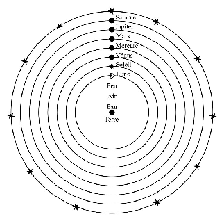
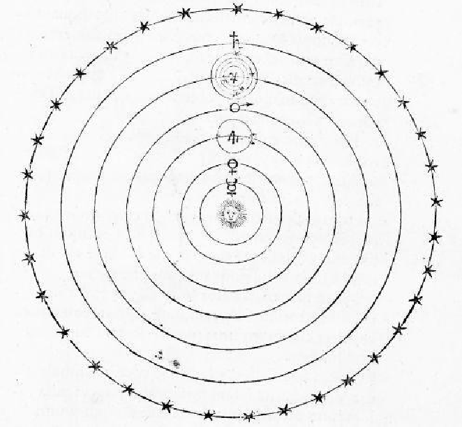
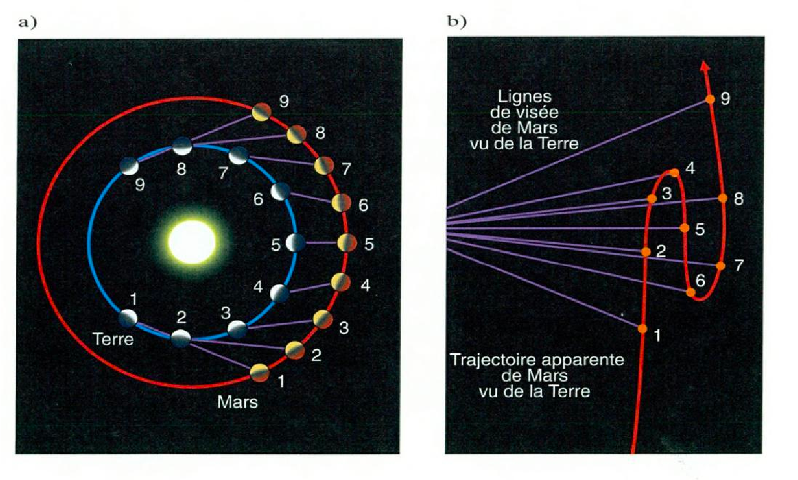
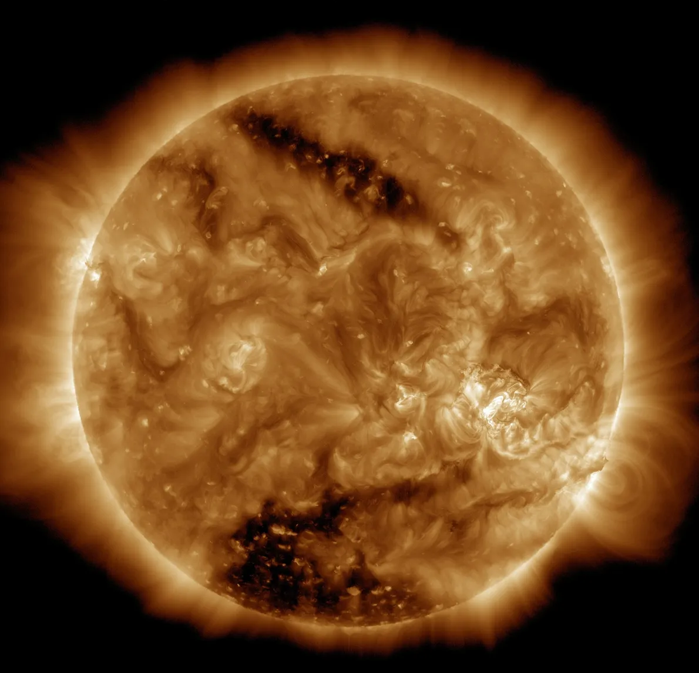
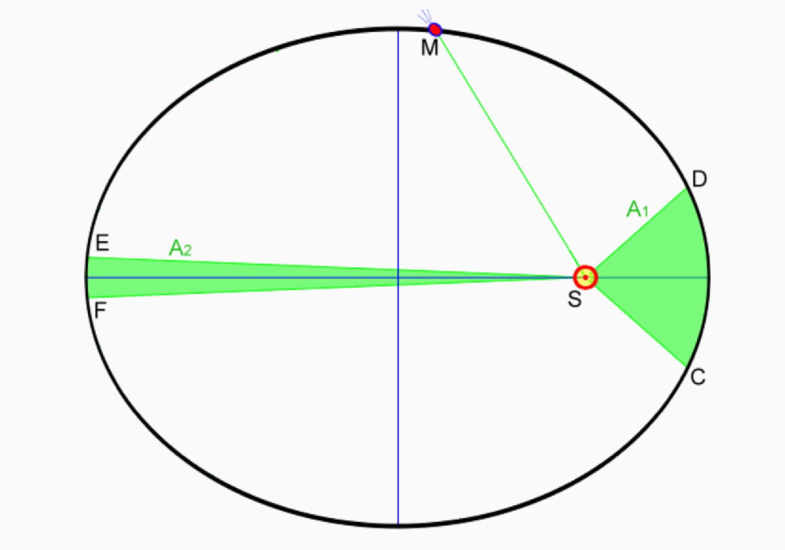
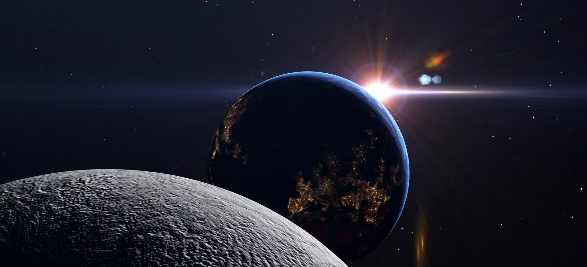
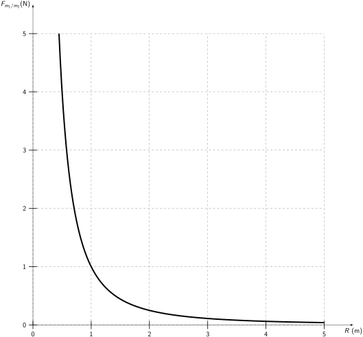
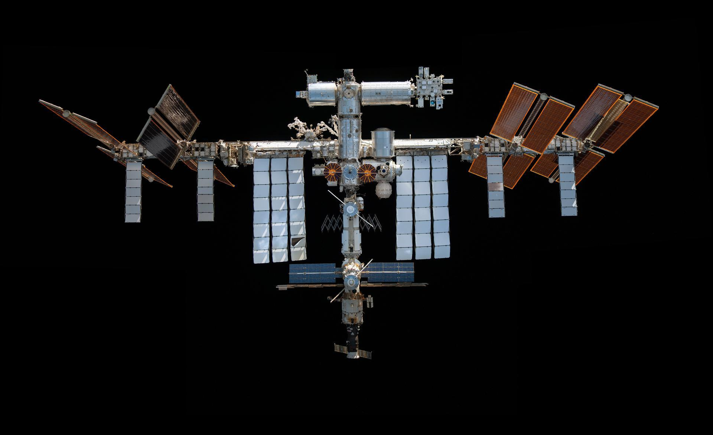
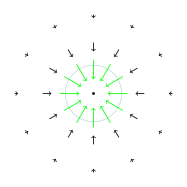

La gravitation universelle
Slides du cours
Introduction: une longue histoire en quatre étapes
L’observation et l’étude des corps célestes est à l’origine de la loi de la gravitation universelle.

Les modèles géocentriques
Dès l’Antiquité, les savants ont observé les étoiles et ont essayé de comprendre leur mouvement.
Les premiers modèles qui ont tenté de rendre compte du mouvement des astres étaient géocentriques : le mouvement des astres se fait par rotation autour de la Terre, qui est le centre de l’univers.

Cependant, ce modèle est très vite confronté à certaines difficultés. L’une d’elles concerne le mouvement de Mars autour de la Terre.
Tu peux observer sur l’animation ci-dessus que Mars a un mouvement rétrograde autour de la Terre. Cette observation était déjà réalisée plus de deux siècles avant Jésus-Christ, et deux savants de l’époque, Apollonius et Hipparque, ont tenté d’expliquer pourquoi Mars a un tel mouvement : ils ont mis au point les premiers modèles par épicycles. Ces modèles décrivent le mouvement de Mars (mais aussi d’autres astres) de la manière suivante : Mars se déplace le long d’un cercle, à vitesse constante, et le centre de ce cercle se déplace lui-même sur un grand cercle dont le centre est la Terre.
Ces modèles par épicycles ont été étudiés et raffinés pendant longtemps, pour aboutir au modèle de Ptolémée, qui proposa un modèle avec plusieurs épicycles pour expliquer les défauts de mesure des modèles d’Apollonius et Hipparque. Les travaux de Ptolémée furent la référence en astronomie jusqu’au XVIe siècle, avec l’arrivée du modèle héliocentrique de Copernic.
Les modèles héliocentriques
Malgré la précision importante des modèles géocentriques, les astronomes du XVIe siècle n’arrivent pas à prévoir parfaitement le mouvement des astres. Copernic émit l’hypothèse que le Soleil était au centre de l’Univers et que la Terre effectue un mouvement circulaire autour de lui : c’est la naissance des modèles héliocentriques. Bien que le modèle héliocentrique de Copernic représente une révolution en astronomie, il ne permet pas une plus grande précision dans les prédictions que dans le modèle de Ptolémée. La raison est que Copernic suppose que les astres décrivent des cercles autour du Soleil.

Cependant, un atout du modèle de Copernic est sa simplicité par rapport au modèle avec épicycles. De plus, le mouvement rétrograde de Mars s’explique facilement comme un effet de perspective d’un observateur sur Terre.

Le modèle de Copernic ne rencontrera pas un franc succès auprès de ses contemporains : ceux-ci étaient, entre autres, influencés par le sens commun de l’époque et les dogmes religieux.
Au XVIIe siècle, Galilée se positionne en défenseur du modèle de Copernic : il apporta des arguments importants en faveur de ce modèle, grâce à des observations des satellites de Jupiter faites avec une lunette astronomique. Il observe que Jupiter et ses satellites forment un système planétaire miniature autour d’un centre qui n’est pas la Terre.
Les lois de Kepler
Le modèle de Copernic place le Soleil au centre de l’Univers et suppose que les astres décrivent un mouvement circulaire dont le centre est le Soleil. Cependant, les mesures des mouvements des astres ne collent pas parfaitement aux trajectoires du modèle et Copernic fait vite appel aux épicycles pour améliorer son modèle. Malgré ces améliorations, le modèle héliocentrique reste imparfait.

C’est à la fin du XVIe siècle qu’une avancée majeure est réalisée pour expliquer le mouvement des astres : Johannes Kepler, sur base de mesures méticuleuses réalisées par l’astronome danois Tycho Brahe, se rend compte que les planètes ne décrivent pas des mouvements circulaires mais elliptiques, dont un des foyers est occupé par le Soleil. Il s’agit de sa première loi, parmi trois qui tentent de décrire le mouvement des planètes autour du Soleil.
La trajectoire de chaque planète est une ellipse dont un foyer est occupé par le Soleil.
Le segment qui joint le Soleil à une planète balaie des secteurs d’aires égales en des durées égales, quelles que soient ces durées.

Le quotient du cube du demi-grand axe par le carré de la période de révolution est le même pour toutes les planètes : \[ \frac{a^3_1}{T_1^2}=\frac{a^3_2}{T_2^2}=\ldots \]
Exercice 1 Complète le tableau suivant à l’aide de la 3e loi de Kepler.
| Planète | \(a(10^9\text{m})\) | \(T(10^6\text{s})\) | \(a^3/T^3(10^{15}\text{m}^3/\text{s}^2)\) |
|---|---|---|---|
| Mercure | 57,9 | 3356 | |
| Vénus | 108,1 | 19,41 | |
| Terre | 149,6 | ||
| Mars | 59,36 | 3364 | |
| Jupiter | 778,4 | 374,3 | |
| Saturne | 1424 | 928,4 |
La loi de la gravitation universelle
Kepler a décrit avec précision le mouvement des planètes, mais il ne l’a pas expliqué. Il faut attendre le XVIIe siècle et Isaac Newton pour comprendre pourquoi les planètes suivent ces trajectoires elliptiques.

Newton propose que toutes les masses s’attirent mutuellement avec une force qui dépend de certaines de leurs carctéristiques. Il va montrer ainsi que l’interaction qui fait tomber un objet sur Terre est aussi responsable du mouvement des planètes autour du Soleil. Cette idée révolutionnaire unifie les phénomènes terrestres et célestes sous une même loi.
Cette loi permet non seulement d’expliquer les trajectoires des planètes décrites par Kepler, mais aussi d’autres phénomènes tels que la chute des objets sur Terre, les marées ou encore le mouvement des satellites artificiels.
Newton montre que les lois de Kepler sont une conséquence directe de la gravitation universelle : en appliquant ses lois du mouvement et la force gravitationnelle, il retrouve les trajectoires elliptiques des planètes. C’est ainsi que la physique moderne voit le jour : un même principe explique à la fois le mouvement des corps célestes et celui des objets terrestres.
La loi de la gravitation universelle
La démarche de Newton
Nous allons énoncer la loi de la gravitation universelle en suivant la démarche de Newton.
La première idée de Newton est d’interpréter le mouvement de la Lune autour de la Terre comme une chute libre. Voici une animation qui illustre cette interprétation :
Tout objet proche de la surface de la Terre est soumis à une force gravitationnelle. Par exemple, une pomme que vous tenez dans la main subit une accélération dirigée vers le centre de la Terre, d’intensité \(g = 9,81\text{ m/s}^2\). Si vous lâchez cette pomme, elle tombe. Si vous la lancez horizontalement, elle suit une trajectoire parabolique.
En s’appuyant sur cette idée, Newton a imaginé un tir horizontal où la vitesse initiale est si grande que l’objet ne retombe jamais au sol. La Lune, selon cette vision, est en perpétuelle chute libre autour de la Terre, mais sa vitesse lui permet de « manquer » la Terre en permanence.
Les observations montrent que la trajectoire de la Lune est approximativement circulaire. Nous allons donc supposer dans la suite qu’elle décrit un mouvement circulaire uniforme (MCU) autour de la Terre, avec une vitesse d’intensité constante. Ce modèle implique que la Lune possède une accélération centripète \(a_L\), que nous allons comparer à l’accélération d’un objet en chute libre sur Terre.
Pour rappel :
- \(a_L = \omega^2 R = \dfrac{4\pi^2 R}{T^2}\)
- Le rayon Terre-Lune est \(R = 385 000\) km
- Le rayon de la Terre est \(R_0 = 6370\) km
Exercice 2
- Calculer \(\dfrac{g}{a_L}\).
- Calculer \(\dfrac{R}{R_0}\).
- Déduire que \(\dfrac{g}{a_L} \simeq \left(\dfrac{R}{R_0}\right)^2\).
Newton en déduit que la force exercée par la Terre sur la pomme, \(\overrightarrow{F}_{\text{T/P}}\), est de même nature que celle exercée sur la Lune, \(\overrightarrow{F}_{\text{T/L}}\). Les résultats de l’exercice précédent montrent que cette force est proportionnelle à \(\dfrac{1}{R^2}\).
Autrement dit, l’intensité de la force d’attraction terrestre diminue avec le carré de la distance au centre de la Terre.
D’après la deuxième loi de Newton, la force gravitationnelle \(\overrightarrow{F}_{\text{T/L}}\) est reliée à l’accélération de la Lune par :
\[ \overrightarrow{F}_{\text{T/L}} = m_L \overrightarrow{a}_L. \]
On en déduit que cette force dépend de la masse de la Lune, \(m_L\).
Un autre paramètre intervient : la masse de la Terre, \(m_T\). En effet, selon la loi des actions réciproques, la Lune exerce également une force sur la Terre, \(\overrightarrow{F}_{\text{L/T}}\). Ces deux forces sont opposées mais de même intensité :
\[ \overrightarrow{F}_{\text{T/L}} = -\overrightarrow{F}_{\text{L/T}}. \]
D’après la deuxième loi de Newton, \(\overrightarrow{F}_{\text{T/L}}\) dépend donc aussi de la masse de la Terre.
L’énoncé de la loi de la gravitation universelle
En résumé, la force \(\overrightarrow{F}_{\text{T/L}}\) est :
- proportionnelle aux masses \(m_L\) et \(m_T\),
- inversement proportionnelle au carré de la distance \(R\) entre les deux corps.
Le génie de Newton a été d’étendre ce raisonnement à tous les astres du système solaire, puis à tous les corps matériels. Il en a déduit une loi fondamentale de la nature.
Deux corps ponctuels s’attirent avec une force dirigée selon la droite qui les joint. L’intensité de cette force est proportionnelle au produit de leurs masses et inversement proportionnelle au carré de la distance qui les sépare :
\[ F_{m_1/m_2}=F_{m_2/m_1} = k_g \dfrac{m_1 m_2}{d^2}. \]
La constante \(k_g\) est universelle. Elle a été estimée par Newton et mesurée avec précision par Cavendish en 1798 :
\[ k_g = 6,67 \times 10^{-11} \dfrac{\text{N} \cdot \text{m}^2}{\text{kg}^2}. \]
Cette valeur montre que la force gravitationnelle est généralement faible. Elle diminue rapidement lorsque la distance entre les objets augmente. Pour mieux comprendre cette relation, représentons graphiquement la variation de la force gravitationnelle entre deux objets en fonction de leur distance.
On choisi deux masses \(m_1=m_2=m\) de sorte à ce que \(k_gm^2=1\). Ceci permet d’écrire que \(F_{m_1/m_2}=\dfrac{1}{d^2}\). Voici une représentation graphique de \(F_{m_1/m_2}\) en fonction de la distance entre les objets.

Exercice 3
- Si la distance entre deux objets double, comment est modifiée la force gravitationnelle entre eux ?
- Un astronaute lâche un objet en chute libre sur une planète inconnue. Son accélération augmente-t-elle au cours de la chute ?
- Le poids d’un kilogramme de plumes est-il le même sur la Terre et sur la Lune ? Justifier.
Exercice 4 Calcule la force d’attraction que tu exerces sur ton voisin le plus proche. Explique ensuite pourquoi tu n’est pas collé à ton voisin.
Applications
Pour les exercices qui suivent, les constantes suivantes seront utilisées.
| Constante | Valeur |
|---|---|
| Constante gravitationnelle \(k_g\) | \(6,67 \times 10^{-11} \frac{\text{N} \cdot \text{m}^2}{\text{kg}^2}\) |
| Accélération terrestre \(g\) | \(9,81 \text{ m/s}^2\) |
| Masse de la Terre \(m_T\) | \(5,97 \times 10^{24} \text{ kg}\) |
| Masse du Soleil \(m_S\) | \(1,99 \times 10^{30} \text{ kg}\) |
Mouvement des astres dans le système solaire
La première loi de Kepler dit que la trajectoire des planètes autour du soleil est elliptique. Voici une représentation de quelques unes de ces trajectoires:
Tu peux constater que les trajectoires ont l’air d’être des cercles. Nous supposerons donc, afin de faciliter les calculs, que les trajectoires des astres dans le système solaire sont circulaires. Ceci nous permettra de faire appel à la théorie des MCU pour résoudre les exercices.
Voyons un exemple d’application pour trouver la vitesse ou la période de révolution d’un astre.
Exemple 1 Dans cet exemple, nous allons estimer la vitesse orbitale de Neptune, en sachant que le rayon de l’orbite de Neptune autour du soleil est 30 fois plus grande que le rayon de l’orbite de la Terre autour du soleil.
Explicitons ce que dit l’énoncé de l’exemple:
- \(F_{S/N}=k_g\dfrac{m_Sm_N}{R_N^2}\)
- \(R_N=30R_T\)
D’après la deuxième loi de Newton, on a que \(F_{S/N}=m_Na_N\) , où \(a_N=\dfrac{v^2}{R_N}\) est l’accélération centripète.
On a donc \(v^2=k_g\dfrac{m_S}{R_N}\). Comme \(R_N=30 R_T=30\cdot 6,37\cdot 10^6\text{m}\), on a que
\[ v^2=k_g\dfrac{m_S}{R_N}=6,67\cdot 10^{-11}\dfrac{1,99\cdot 10^{30}}{6,37\cdot 10^6}=\dfrac{6,67\cdot 1,99}{6,37}\cdot 10^{13}=2,08\cdot 10^{13} \text{m}^2/\text{s}^2 \]
Donc \(v\simeq 4,5\cdot 10^6 \text{m/s}=4,5\text{km/s}\).
Exercice 5 Un satellite artificiel tourne autour de la Terre à une altitude de 500 km.
- Exprime le rayon de son orbite en fonction du rayon terrestre.
- Calcule sa vitesse orbitale en supposant que \(R_T = 6,37 \times 10^6\) m.
- Donne la période de révolution du satellite.
Exercice 6 La station spaciale internationale (ISS) est en orbite circulaire autour de la Terre à une altitude de 400km. Calcule la vitesse de l’ISS.
fig-align=“center” width=40%} ## Détermination de la masse des corps célestes
La loi de la gravitation est une des seules manières dont nous pouvons mesurer la masse des astres.
Prenons l’exemple de la Terre. Comment peut-on déterminer sa masse sans avoir à la “peser” directement ?
L’idée repose sur la relation entre la force gravitationnelle et l’accélération gravitationnelle \(g\).
Nous savons que tout objet de masse \(m\) situé près de la surface terrestre subit une accélération \(g = 9,81\) m/s². Cette accélération est due à la force gravitationnelle exercée par la Terre.
En appliquant la deuxième loi de Newton :
\[ m g = k_g\frac{m m_T}{R_T^2} \]
On peut simplifier :
\[ g = k_g\frac{ m_T}{R_T^2} \]
D’où :
\[ m_T = \frac{g R_T^2}{k_g}\simeq 5,97\cdot 10^{24}\text{kg}. \]
Ce raisonnement nous permet de déterminer la masse de n’importe quel astre en connaissant son rayon et son influence sur un objet en orbite autour de lui ou à sa surface.
Exercice 7 En utilisant \(g_M = 3,71\) m/s² et \(R_M = 3,39 \times 10^6\) m, calcule la masse de Mars.
Exercice 8 Le but de cet exercice est de calculer la masse du Soleil, sur base du mouvement de la Terre.
- Calcule la vitesse de la terre autour du soleil, sachant que la distance Terre-Soleil vaut \(150\) millions de km.
- Déduis-en la masse du Soleil.
La gravité autour de la Terre
L’accélération gravitationnelle varie avec l’altitude.
Exercice 9 Considérons une bille de plomb de 1kg. Calcule la force de gravitation exercée par la Terre sur cette masse si:
- elle est à 10m au dessus de la surface de la Terre.
- elle est à 10km au dessus de la surface de la Terre.
- elle est dans la Station Spaciale Internationale (400km d’altitude).
Les calculs réalisés dans l’exercice précédent peuvent se généraliser pour un objet de masse \(m\) à une altitude \(h\):
Pour cet objet, s’il est à la surface de la Terre, nous avons \(g = \frac{k_g m_T}{R_T^2}=9,81 \text{m/s}^2\). Mais si l’objet est à une altitude \(h\), la distance qui le sépare du centre de la Terre devient \(R_T + h\). En notant \(g_h\) son accélération centripète, on obtient:
\[ mg_h=k_g\dfrac{m_Tm}{(R_T+h)^2}. \]
La nouvelle accélération gravitationnelle est donc :
\[ g_h = \frac{k_g m_T}{(R_T + h)^2} \]
Ainsi on constate à nouveau que plus on s’éloigne de la Terre, plus l’intensité de la force de gravité terrestre diminue.
Exercice 10
- Calcule la gravité ressentie par un astronaute à bord de l’ISS, située à 400 km d’altitude.
- Compare cette valeur avec \(g = 9,81\) m/s².
Le champ gravitationnel
Nous avons vu que l’intensité de l’accélération de pesanteur d’un objet proche de la Terre dépend de son altitude. En effet, pour une altitude donnée, nous avons vu que
\[ g_h = \frac{k_g m_T}{(R_T + h)^2} \]
Voici un shéma qui représente divers accélérations pour différentes altitudes, autour de la Terre.

Ce mode de représentation porte le nom de champ gravitationnel: on place en chaque point autour de la terre un vecteur dont l’intensité vaut \(g_h\) et pointant vers le centre de la Terre. Ce mode de représentation permet d’observer visuellement l’influence que la terre exerce sur les objets proches d’elle.
Formellement, on définit le champ gravitationnel autour d’un objet comme suit:
Définition 1 Soit un astre de masse \(M\). Le champ gravitationnel \(\overrightarrow{g}_M\) autour de cet astre est défini en tout point, d’altitude \(h\), de l’espace comme:
\[ \overrightarrow{g}_M(h) = \frac{k_g M}{(R_M+h)^2} \overrightarrow{u}, \] où \(R_M\) est le rayon de l’astre et \(\overrightarrow{u}\) représente un vecteur de longueur 1 pointant vers le centre de l’objet \(M\).
Le champ gravitationnel permet donc de décrire l’attraction qu’il exerce sur un objet autour de lui. Plus précisément, tout objet de masse \(m\) subira une force gravitationnelle décrite par l’équation suivante:
\[ \overrightarrow{F}_{M/m} = m \overrightarrow{g}. \]
On retrouve bien la loi de la gravitation universelle !
Exercice 11 Le rayon de la Lune vaut \(1738\text{km}\).
- Ecris la formule du champ gravitationnel autour de la Lune.
- Peut-on affirmer qu’à la surface de la Lune, le poids d’un astronaute est 6 fois plus grand que sur Terre?
Orbite géostationnaire et satellites
Un satellite géostationnaire est un satellite qui reste immobile par rapport à la Terre. Cela signifie qu’il doit tourner en exactement 24h.
Exercice 12
- Ecris une formule qui lie la période d’un satellite et la force de gravitation que celui-ci subit par la Terre.
- Déduis-en l’altitude de ce satellite si celui-ci est en orbite géostationnaire.